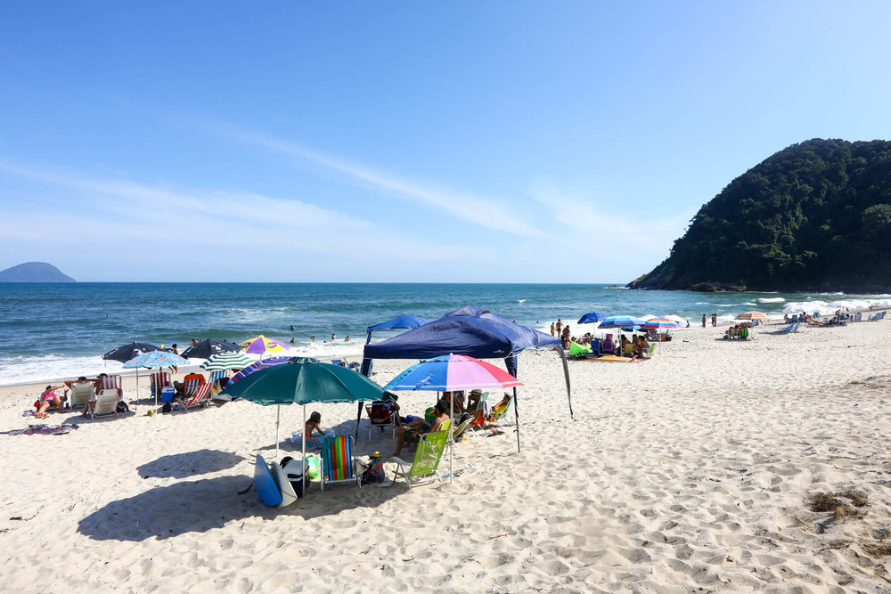
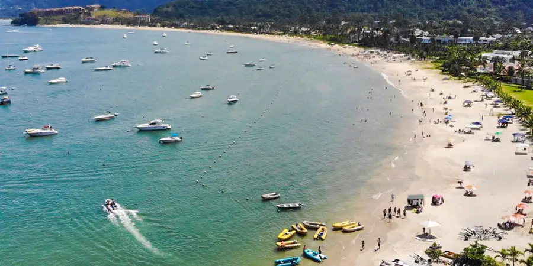
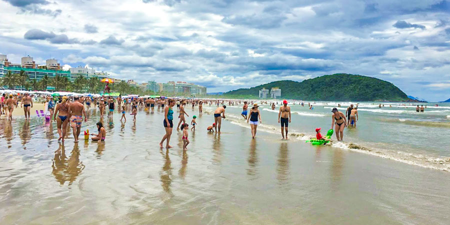
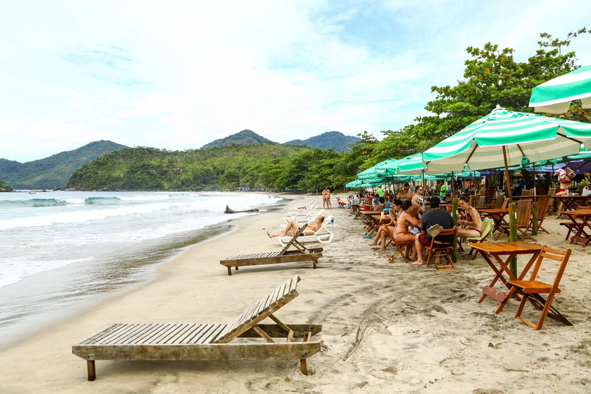

Ubatuba
Praia da Fazenda
.webp)
A visão do alto é muito convidativa: extensa faixa de areia clara e águas cristalinas e calmas. Assim é a praia da Fazenda, local que já foi cenário de diversos filmes e merece fazer parte do roteiro de quem quer conhecer os segredos de Ubatuba. Semelhante a outras praias que ficam dentro de área de preservação, na praia da Fazenda é proibida a instalação de comércios. Então, orientamos levar o que for consumir. Será possível percorrer a Mata Atlântica por algumas trilhas que levam a outras belas atrações, como a Praia da Taquara, a Praia Brava da Almada, a Praia das Bicas e a Praia de Picinguaba. No Centro de Visitantes do Parque Estadual da Serra do Mar, é possível contratar o serviço de guias. Apesar de não haver infraestrutura na praia, a sede do parque oferece chuveiros, banheiros e estacionamento aos visitantes. A partir de lá, serão mais 200 metros de caminhada até a faixa de areia.
Como chegar
Localizada no lado norte de Ubatuba, a Praia da Fazenda está distante 37 km do Centro de Ubatuba e tem acesso por estrada asfaltada e um curto trecho de terra e trilha.
Hotéis em Ubatuba
Ubatuba Praia Hotel
Rancho "valhalla" ubatumirim
Trakai Suites
Restaurantes em Ubatuba
Para comer carnes recorra ao
San Telmo , com cardápio tipicamente portenho. Se o desejo for por menus a base de frutos do mar e peixes, confira o
Rei do Peixe, o Peixe com Banana ou o cardápio enxuto do mediterrâneo Terra Papagalli. Para um menu cheio de boas surpresas, vá ao
Ki-Beirute Esfiharia ou ao Alentejano, que tem o melhor self-service da cidade.
Leia Mais...
São Sebastião
Praia da Jureia

A Praia da Juréia tem visual marcante. É ladeada por dois costões rochosos com presença forte de vegetação, o que reforça a presença da natureza. Tem ondas fortes em determinadas épocas, o que atrai o pessoal do Surf, mas também tem ambiente familiar para pessoas com consciência ambiental. Para crianças, a melhor parte é um riacho que desagua no mar, raso e dessa forma um local ótimo para as brincadeiras e curtir a praia.
Como Chegar
O acesso à estrada que leva à praia pode ser pela pista de acesso à Barra do Una e de lá seguir pela Av. Magno Passos Bittencourt até as casas que cercam a Praia da Jureia.
Hotéis em São Sebastião
Abricó Beach Hotel
Pousada Vila Barequeçaba
Hotel Guarda Mor
Restaurantes em São Sebastião
Experimente sentar-se para um lanche à mesa do Pé de Café. Se o desejo for por frutos dos mar e pratos bem servidos, o Família Restaurante é uma boa pedida, assim como o Restaurante Canoa.
Leia Mais...
Caraguatatuba
Praia de Tabatinga

Com água clara e areia branca, a Praia de Tabatinga está na fronteira com Ubatuba e atrai muitas famílias. De um lado, o mar é raso e seguro para nadar com as crianças. Do outro, perto da foz do Rio Tabatinga, vários praticantes de windsurf e kitesurf aproveitam as ondas. Além disso, a infraestrutura é excelente. A praia conta com restaurantes e quiosques para alugar cadeiras e guarda-sol. É possível encontrar vegetação nativa e natureza exuberante, tornando a paisagem incrível.
Como chegar
Hotéis em Caraguatatuba
Pousada Port Louis
Hotel Bosques do Massaguaçu
Brisa Hotel
Restaurantes em Caraguatatuba
Se você gosta de carne, comida japonesa e uma pizza, o Alegro Sushi Pizza Bar é um melhores restaurantes da região
Especializado em frutos do mar, o Mar & Terra é de fato um dos melhores restaurantes de Caraguatatuba, são muitas coisas gostosas no cardápio, que inclui desde refeições completas, a porções, entradas, petiscos e claro, sobremesas e drinks especiais.
Leia Mais...
Bertioga
Riviera de São Lourenço

Este bairro planejado de 2 milhões de metros quadrados é um dos mais movimentados de Bertioga. Isso porque além de possuir uma praia bastante conservada e limpa, também oferece uma estrutura de primeira para os seus visitantes: bares, lojas, restaurantes e hotéis tudo pertinho, com a melhor vista da orla. É um local com muitas casas de veraneio e condomínios fechados, que cresceu rapidamente, mas com a preocupação das autoridades locais em manter a natureza intacta e em seu devido lugar.
Como Chegar
A praia de Riviera de São Lourenço fica na Estância Balneária de Bertioga e está a 80 km distante de São Paulo. A região pode ser acessada pela Rodovia Mogi-Bertioga
Hotéis em Bertioga
27 Praia Hotel - Frente Mar
Pousada dos Pescadores
Cadiz Pousada e Lazer
Restaurantes em Bertioga
Comer bem, sem sofisticação, por um preço justo o restaurante THOBIAS é o lugar perfeito.
O restaurante Maremonti não tem vista para o mar, mas capricha nos ambientes arejados e que combinam rusticidade e elegância.
Leia Mais...
Ilhabela
Praia De Castelhanos

O formato de coração que marca a Praia de Castelhanos está entre as mais famosas imagens de Ilhabela. Com dia de sol e mar calmo, é possível ver as nuances de azul que formam a bela enseada. Parte das praias mais selvagens, Castelhanos é um dos passeios prediletos para quem deseja fugir da rota mais urbana de Ilhabela.
Como chegar
Os passeios mais frequentes para Castelhanos são com veículos 4x4 ou flexiboat. No caso do flexiboat, o mais comum é que haja paradas também na Praia da Fome e na Praia do Saco do Eustáquio. Você poderá escolher fazer o trajeto de ida e volta com um dos dois transportes ou fazer a ida de flexiboat e a volta de 4x4, aproveitando assim os dois tipos de passeio.
Hotéis em Ilhabela
Pousada da Rosa
Pousada Praia do Curral
Ilhabela Studios
Restaurantes em Ilhabela
Comida caseira e saborosa, pra refeições rápidas, o restaurante Cheiro Verde com um dos melhores custo-benefícios de Ilhabela. Prainha Do Julião Bar & Restaurante
Já eleito o melhor bar de praia do litoral norte, pela VEJA SÃO PAULO Comer & Beber, o bar e restaurante fica à beira-mar na badalada praia do Julião, com mesas pé na areia embaladas pelo som de jazz e MPB.
Leia Mais...